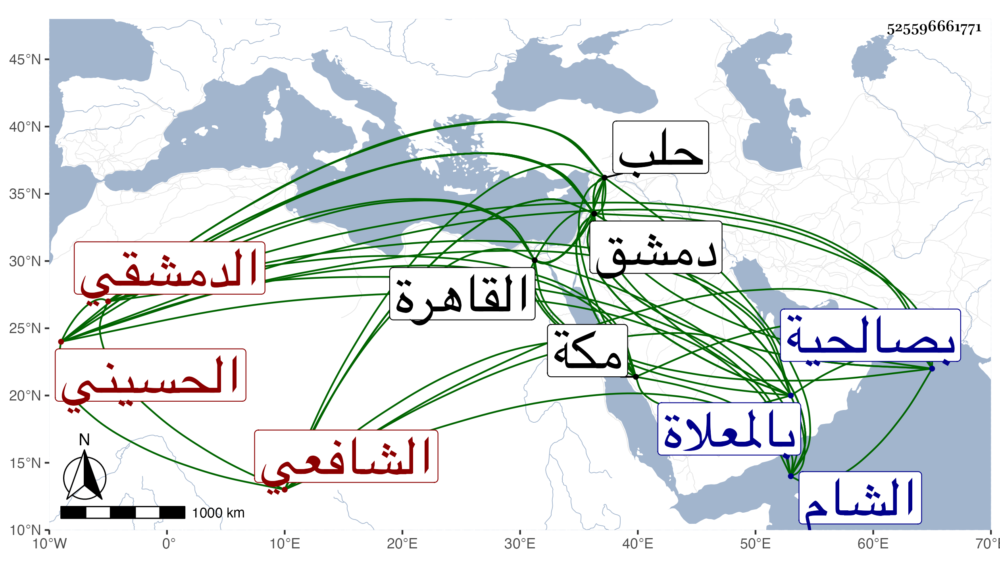

0902Sakhawi.DawLamic.ITO20230111-ara1.EIS1600.525596661771
Biography ID: 525596661771
390
عبد الوهاب بن عمر بن الحسين بن محمد بن علي بن الحسن بن حمزة بن محمد ابن ناصر بن علي بن الحسين بن إسماعيل بن الحسين التاج الحسيني الدمشقي الشافعي ابن أخت قوام الدين قاضي الحنفية بالشام وابن عم الشهاب أحمد بن علي ابن الحافظ الشمس محمد الماضي . ولد بعد سنة ثمانمائة بدمشق ونشأ بها فحفظ القرآن وكتبا وتفقه بالعلاء بن سلام وكذا بالتقي بن قاضي شهبة لكن يسيرا وأخذ الفرائض عن الحواري ومنهاج العابدين بقراءته عن العلاء البخاري ، وقدم القاهرة صحبة الكمال بن البارزي فقرأ المطول وغيره على القاياتي وفي الحديث وغيره على شيخنا وناب عن الكمال بدمشق في القضاء وفي تدريس الأتابكية وغيرها ثم بعد موته استقل بقضاء حلب وحمدت سيرته فيها وبلغني أنه فوض أمر الأوقاف بها لغيره ثم لم يزل يتلطف في الإستعفاء منه حتى أعفى ورجع إلى بلده وبنى له بيتا في باب البريد من دمشق ولزم الإنقطاع للاشتغال والعبادة والتلاوة في بيته بصالحية دمشق ثم في البيت الآخر وكان خيرا بارعا في الفقه والفرائض مع مشاركة في غيرهما وحمق أداه إلى الإنفراد أو أدى الإنفراد إليه وصنف شرحا لفرائض المنهاج ومنسكا كبيرا اختصر فيه منسك ابن جماعة مع زيادات وسماه أوضح المسالك إلى معلم المناسك قرضه له العلم البقليني وأكثر الحج والمجاورة حتى كانت وفاته بمكة في يوم الأحد ثاني جمادى الأولى سنة خمس وسبعين ودفن بالمعلاة بعد أن وقف كتبه ومنها القاموس بخطه على مدرسة أبي عمر وخطه حسن رحمه الله وإيانا .
